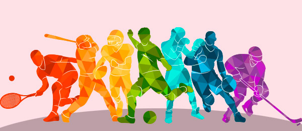

Se hablara de como el deporte nos ayuda en varios aspectos de la vida
Desarrollo
El deporte es toda aquella actividad física que involucra una serie de reglas o normas a
desempeñar dentro de un espacio o área determinada (campo de juego, cancha, pista, etc) a
menudo asociada a la competitividad deportiva.
Motivacion
Escogi este tema ya que el deporte es un tema muy interesante ya que nos ayuda fisica,mental
y psicologicamente
Existen muchos deportes pero pocos son los que se hacen famosos.
Deportes mas famosos en los ultimos 3 años
29/10//2021
Fútbol
Basquetbol
Voleibol
Natacion
Tenis
Beisbol
Hockey
Badminton
Rugby
Balon mano
Existen muchos deportes pero pocos son los que se hacen famosos.

Hay muchos lugares en donde puedes encontrar informacion sobre los deportes.
Video de YouTube
29/10//2021
Los deportes
El deporte es toda aquella actividad física que involucra una serie de reglas o normas a
desempeñar dentro de un espacio o área determinada (campo de juego, cancha,pista, etc) a
menudo asociada a la competitividad deportiva.
Investigacion
26/01/2022
El papel del deporte en la actualidad
El deporte desempeña un papel importante como promotor de la integración social y el
desarrollo económico
en diferentes contextos geográficos, culturales y políticos. ... Además, ofrece una
contribución al
mejoramiento del clima social y fomenta la participación social, rompiendo con las barreras
de clase.Sin
dejar a un lado la función educativa que cumple la práctica del deporte respecto al
desarrollo de las
condiciones físicas como la fuerza muscular, resistencia a la fatiga, rapidez de reflejos,
velocidad o
cualidades espirituales como el valor, la tenacidad y la capacidad de sufrimiento, tienen
que existir
otras
Pros y contras del deporte
Control del peso,
Reduce riesgo de enfermedades,Balancea el azúcar, Ayuda a dejar de fumar, Mejora el estado
de
ánimo,Evita el envejecimiento, Fortalece huesos y músculos.Puede crear enfermedades como la
obesidad.
Disminución de la elasticidad y movilidad articular,hipotrofia muscular, disminución de la
habilidad y
capacidad de reacción
Los deporte en la antiguedad
Por entonces, el deporte se utilizaba como entrenamiento para la caza y la guerra. El primer
pueblo que
celebró competiciones deportivas amistosas fue el griego: los Juegos Olímpicos. Éstos
comenzaron el año
776 a. de J.C. y en ellos había carreras, boxeo, salto de longitud y lanzamiento de disco y
jabalina.
El juego de pelota se practicaba hace ya mucho tiempo.
El deporte es una actividad, normalmente de carácter
competitivo y que puede mejorar la condición física, de quien lo practica, y además
tiene propiedades que lo diferencian del juego. La Real Academia Española, en su
Diccionario de la lengua española, define deporte como una «actividad física, ejercida
como juego o competición, cuya práctica supone entrenamiento y sujeción a normas»;
también, en una segunda acepción, más amplia, como «recreación, pasatiempo, placer,
diversión o ejercicio físico, por lo común al aire libre». Por otra parte, la Carta
Europea del deporte lo define como: «Todas las formas de actividades físicas que
participación organizada o no, tienen como objetivo la expresión o la mejora de la
condición física y psíquica, el desarrollo de las relaciones sociales o la obtención de
resultados en
competición de todos los niveles».
Institucionalmente, para que una actividad sea considerada deporte, debe estar evaluada
por estructuras administrativas y de control que se encargan de reglamentarlo (las
organizaciones deportivas).El hecho de que alguna actividad no esté reconocida
institucionalmente como deporte, no impide que pueda estarlo popularmente, como ocurre
con el deporte rural o con los deportes alternativos. La mayoría de las definiciones de
deporte lo definen como «actividad física», pero existen actividades de bajo o nulo
ejercicio físico que son consideradas como deportes por asociaciones como el COI, por
ejemplo el ajedrez,el tiro deportivo y los Deportes electrónicos, por pensarse que la
concentración y habilidades mentales necesarias para destacar en ellas requieren una
buena forma física. Por el contrario, existen actividades físicas extenuantes que no son
un deporte, por no cumplir con otros elementos de la definición.Convivencia en los deportesEl Deporte es Salud, Juego limpio en el deporte es Sana Convivencia, pero también a
través de él podemos aprender muchos valores, como el del compañerismo, respeto o el
juego limpio. El Respeto, a los adversarios, los propios compañeros, los auxiliares, los
árbitros y a los espectadores.